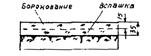
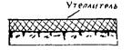
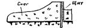
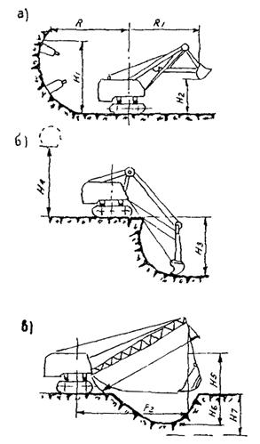

КОМПЛЕКС ПЕРСПЕКТИВНОГО РАЗВИТИЯ г. МОСКВЫ
УПРАВЛЕНИЕ РАЗВИТИЯ ГЕНПЛАНА г. МОСКВЫ
МОССТРОЙЛИЦЕНЗИЯ
ВЕДОМСТВЕННЫЕ СТРОИТЕЛЬНЫЕ НОРМЫ
УКАЗАНИЯ
ПО ПРОИЗВОДСТВУ ЗЕМЛЯНЫХ РАБОТ
НА ЖИЛИЩНО-ГРАЖДАНСКОМ
СТРОИТЕЛЬСТВЕ, ОСУЩЕСТВЛЯЕМОМ
ОРГАНИЗАЦИЯМИ ГЛАВМОССТРОЯ
ВСН 38-96
МОСКВА - 1997
Указания по производству земляных работ в жилищно-гражданском строительстве, осуществляемом организациями Главмосстроя, разработаны лабораторией оснований и фундаментов НИИМосстроя (к.т.н. В.А. Трушковым) и ЦНИИОМТП (к.т.н. А.С. Мензуренко) при участии Мосстройлицензии (Ю.И. Столяров, к.т.н. В.Д. Фельдман).
Указания составлены на основе результатов научно-исследовательских работ, выполненных НИИМосстроем, ЦНИИОМТП, МГСУ, а также многолетнего опыта специализированных организаций Комплекса перспективного развития г. Москвы.
Указания согласованы с АО ЦНИИОМТП, АО Главмосстрой, АО Мосстроймеханизация-2, АО Мосстроймеханизация-5.
|
Комплекс перспективного развития г. Москвы |
Ведомственные строительные нормы |
ВСН 38-96 Взамен ВСН 73-72 |
|
Управление развития Генплана г. Москвы |
Указания по производству земляных работ на жилищно-гражданском строительстве, осуществляемом организациями Главмосстроя |
|
|
Мосстройлицензия |
1.1. Настоящие указания распространяются на производство и приемку земляных работ, выполняемых внутри кварталов или отдельно строящихся зданий, в составе работ нулевого цикла, устанавливают последовательность и взаимную увязку земляных работ в летних и зимних условиях, рекомендуют наиболее рациональные методы производства работ.
1.2. Указания предназначены для проектирования и организации земляных работ, а также практического руководства при производстве этих работ на объектах жилищно-гражданского строительства.
1.3. Для выполнения земляных работ в указаниях приведены технические характеристики машин и механизмов, основные рабочие параметры землеройной техники и рекомендации для их применения в летний и зимний период.
1.4. При производстве земляных работ следует соблюдать требования СНиП по организации строительного производства, геодезическим работам, технике безопасности и правилам пожарной безопасности.
1.5. При земляных работах следует выполнять входной, операционный и приемочный контроль, руководствуясь требованиями соответствующих глав СНиП и справочным приложением 1 СНиП 3.02.01-87.
|
Внесены НИИМосстроем |
Утверждены Управлением развития Генплана г. Москвы 31 декабря 1996 г. |
Дата введения в действие 1 января 1997 г. |
1.6. Приемку земляных работ с составлением актов освидетельствования скрытых работ следует выполнять, руководствуясь положением 1 СНиП 3.02.01-87. При необходимости в проекте допускается указывать другие элементы, подлежащие промежуточной приемке с составлением актов освидетельствования скрытых работ.
2.1. В состав земляных работ, осуществляемых в комплексе работ нулевого цикла внутри кварталов или для отдельно строящихся зданий, входят:
а) срезка, транспортировка и укладка в штабели растительного слоя грунта (места складирования грунта на картограмме земляных работ определяет и наносит строительная организация);
б) срезка и подсыпка грунта при вертикальной планировке территорий;
в) рытье траншей для прокладки и перекладки внутриквартальных и дворовых подземных коммуникаций - водопровода, канализации, газопровода, теплосети, водостоков, коллекторов, дренажа, электрокабеля и слаботочных линий;
г) устройство земляного корыта и песчаного основания под постоянные и временные внутриквартальные дороги и проезды;
д) рытье котлованов и траншей под фундаменты зданий и сооружений с отвозкой излишнего грунта в пазухах, траншеях и отсеках технических подполий с подвозкой недостающего грунта;
е) засыпка и уплотнение грунта в пазухах, траншеях и отсеках технических подполий с подвозкой недостающего грунта;
ж) подготовка основания под пути башенных кранов.
3.1. Все земляные работы (за исключением подготовки растительного грунта и торфа), подлежащие выполнению механизированным способом, обязаны выполнять управления механизации по договорам субподряда с организациями трестов фундаментостроения или организациями общестроительных трестов.
В комплекс земляных работ, подлежащих выполнению механизированным способом управлениями механизации входят:
а) подготовительные работы для всех видов механизированных разработок грунта.
снятие асфальтового покрытия и разбивка бетонных и других оснований механизированным способом в местах производства земляных работ;
б) при рытье котлованов под здания;
рытье котлованов по отметкам, а также отвозка грунта;
обратная засыпка грунта под полы техподполья (без уплотнения);
обратная засыпка грунта в пазухи с уплотнением по технологии, рекомендуемой в разделе IV;
устройство и содержание временных водоотводных канав или ограждающих валиков при производстве земляных работ (места сброса воды указывает строительная организация);
откачка ливневых и талых вод во время производства земляных работ;
в) при рытье для наружных коммуникаций:
рытье траншей в отвал с отвозкой грунта;
обратная засыпка траншей с уплотнением по принятой технологии и засыпка траншей песчаным грунтом в местах пересечения с дорогами, тротуарами и коммуникациями;
г) при вертикальной планировке:
срезка грунта по проектным отметкам (с учетом необходимой подсыпки растительного грунта) и перемещение его в пределах квартала, микрорайона или отдельной площадки или за пределами их;
подвозка недостающего грунта для вертикальной планировки;
планировка территорий по проектным отметкам с допусками до ±10 см;
д) для производства озеленительных работ:
срезка растительного грунта и штабелировка его на временных отвалах. В зимнее время сбор растительного грунта не производится;
передача растительного грунта организациям, выполняющим озеленительные работы, погрузка в транспортные средства и транспортировка его в места, указанные озеленительными организациями.
3.2. Для обеспечения нормальной организации работ нулевого цикла, в том числе земляных работ, генподрядчик обязан не позднее чем за 1 месяц до начала работ передать субподрядному тресту фундаментостроения площадки по акту (приложение 1).
3.3. Комплекс земляных работ ведется под непосредственным контролем генподрядного треста и треста фундаментостроения.
Для выполнения земляных работ механизированным способом они обязаны за 20 дней до начала производства земляных работ направить соответствующему управлению механизации заказ на выполнение работ с приложением следующей технической документации:
а) для разработки котлованов и траншей - рабочий чертеж земляных работ или схему производства земляных работ с указанием габаритов котлованов или траншей в основании разработки и вертикальных отметок основания котлованов или траншей;
б) для производства работ по вертикальной планировке:
проект вертикальной планировки и картограмму земляных работ с указанием границ производства работ, обеспечивающих сдачу в эксплуатацию группы зданий или отдельных объектов;
в) подсчеты объемов земляных работ, составленные в соответствии с правилами подсчетов работ, привлеченными в технической части Сборника единичных расценок на земляные работы;
г) расчет сметной стоимости или выписку из сметы, составленные на основании переданных схем, подсчетов объемов работ и единичных расценок на земляные работы с учетом переходных коэффициентов;
д) проект производства земляных работ с обязательным указанием перемещения земляных масс из котлованов, траншей и при вертикальной планировке. В том случае, когда по проекту производства работ грунт подлежит вывозке на промежуточный временный склад, передать управлению механизации площадку для складирования грунта;
е) копия ордера на разработку котлованов и траншей.
3.4. Геодезическая служба, связанная с выполнением земляных работ и, в частности, разбивка зданий в натуре с вынесением осей на обноску, разбивка трасс наружных коммуникаций в натуре, а также установка в необходимом количестве реперов с вынесением отметок на них возлагается на организации общестроительных трестов и трестов фундаментостроения.
Организации трестов фундаментостроения или общестроительных трестов должны оказывать содействие управлениям механизации своей геодезической службе в контроле за производством земляных работ.
Контроль за соблюдением заданных отметок при разработке котлованов и траншей и ответственность за это несет управление механизации.
Ответственность за производство земляных работ и заданных отметках по вертикальной планировке несет Управление механизации.
3.5. Ответственность за выполнение земляных работ по габаритам в основании, а также соблюдение крутизны откосов, установленных правилами по технике безопасности и техническими условиями на производстве земляных работ, возлагается на Управление механизации.
3.6. Организации трестов фундаментостроения или общестроительных трестов обязаны своими силами и за свой счет обеспечить освещение территории для возможности производства земляных работ в две смены, а также обеспечить в необходимых случаях выполнение работ по укреплению откосов траншей.
3.7. Работы по рыхлению мерзлого грунта с помощью взрыва производят специализированные участки взрывных работ.
а) срезка, перемещение, штабелирование и вывозка со стройплощадки растительного грунта;
б) планировка территорий застройки, обеспечивающая временный сток поверхностных вод;
в) рытье траншей для прокладки подземных коммуникаций, в том числе для переноса существующих сетей, устройства внутриквартальных подземных коллекторов из сборных элементов и других подземных сооружений;
г) засыпка грунта в траншеи с уплотнением его после укладки трубопроводов и в пазухи у подземных коллекторов из сборных элементов;
д) рытье грунта в котлованах и траншеях под подземную часть здания;
е) засыпка песка в пазухи у фундаментов и стен технических подполий и подвалов с послойным его уплотнением;
ж) подготовка основания под пути башенных кранов;
з) вертикальная планировка территории застройки с уплотнением грунта в местах подсыпок;
и) земляные работы по устройству оснований под постоянные дороги, проезды и площадки;
к) земляные работы по благоустройству территории (вспашка газонов, рытье ям для деревьев и кустарников и др.).
Примечание. Указанная в п. 4.1 последовательность производства работ зависит от конкретных условий застройки кварталов (микрорайонов) и при наличии обоснований может соответственно меняться.
4.2. При производстве работ нулевого цикла в зимних условиях очередность и последовательность земляных работ изменяются в зависимости от степени их готовности, а именно:
а) если к началу зимы на стройплощадке закончена срезка растительного слоя грунта и выполнена планировка территорий застройки для обеспечения временного стока поверхностных вод, то все виды земляных работ, перечисленные в п. 4.1, выполняются в зимних условиях в той же последовательности, за исключением работ по устройству оснований под постоянные дороги, проезды, площадки, которые переносятся на теплое время года;
б) если к началу зимы работы нулевого цикла не выполнены, то необходимо перенести на теплое время года производство возможно большего объема земляных работ.
Исключения из этого указания допускаются в случае необходимости срезки большого слоя земли (свыше 1 м) на участке расположения здания и площадки вокруг него;
в) в ряде случаев в зимних условиях (при слабопересеченном рельефе местности - до 0,5 м) допускается срезка грунта для устройства временных дорог, укладки подкрановых путей и устройства складских площадок.
4.3. Для того, чтобы предупредить промерзание грунтов, следует пользоваться способами, перечисленными в таблице 1.
Таблица 1
Рекомендуемые способы утепления грунтов от промерзания в зимний период
|
Схема |
|
|
1. Вспашка грунта на глубину не менее 35 см с последующим боронованием на глубину 10 - 15 см. Применяется осенью для предохранения грунта от промерзания в случае, когда рытье котлованов планируется на зимний период. |
 |
|
2. Укрытие поверхности грунта утепляющими материалами - опилками, матами, с соломой и др. толщиной не менее 10 см. Применяется осенью для предохранения грунта от промерзания, если рытье котлованов планируется на зимний период времени. |
 |
|
3. Снегозадержание (установка снегозадерживающих щитов, устройство валов из снега толщиной не менее 80 см). Применяется зимой для приостановки дальнейшего промерзания грунта |
 |
5.1. Проекты производства земляных работ разрабатываются трестами механизации, выполняющими эти работы. Не позднее чем за один месяц до начала выполнения земляных работ проекты производства должны быть рассмотрены и согласованы генподрядным строительным трестом или трестом фундаментостроения.
5.2. В состав проекта производства земляных работ должны входить:
а) дополнительные работы, выполняемые при значительных притоках грунтовых вод, заболоченности территории, возможных оползнях и сдвигах грунта;
б) способы рытья котлованов и траншей глубиной более 3 м или сложной конфигурации, требующих специальных креплений;
в) способы подготовки оснований под насыпи и производства работ при возведении насыпей на просадочных грунтах, плывунах, заболоченной местности и при притоках грунтовых вод;
г) способы устройства насыпей на местных неоднородных грунтах, требующих особых условий отсыпки;
д) способы укрепления откосов земляных сооружений;
е) расчеты по обоснованию необходимости создания возможных отвалов и карьеров;
ж) способы перемещения земляных масс из котлованов, траншей и планировочных забоев.
Кроме указанных основных положений в проектах производства земляных работ должны быть разработаны следующие мероприятия:
а) способы перемещения грунта из резервных отвалов для временного складирования, годного для засыпок и отсыпок грунта;
б) способы перемещения и подвозки недостающего песчаного грунта с других объектов с указанием их адресов для подсыпок под основания полов, засыпок траншей в местах пересечения их с дорожными покрытиями, кабелями и подземными коммуникациями, проложенными в пределах глубины траншей.
В этом же разделе должны быть приведены указания о составе проекта производства земляных работ, в которые должны входить:
а) рабочий чертеж или схема производства земляных работ с указанием в ней габаритов котлованов и траншей с их вертикальными отметками по основанию (дну) выемок;
б) подсчеты рабочего и профильного объема земляных работ вертикальной планировки территории;
в) подсчеты рабочего и профильного объема земляных работ по прокладке внутриквартальных подземных трубопроводов;
г) подсчеты рабочего объема земляных работ по прокладке внутриквартальных подземных кабелей;
д) подсчеты рабочего и профильного объема земляных работ по устройству корыт под внутриквартальные дороги, проезды, площадки и дорожки;
е) расчеты крутизны откосов котлованов и траншей глубиной свыше 5 м во всех случаях или глубиной до 5 м при неблагоприятных гидрогеологических условиях.
5.3. Земляные работы в местах расположения действующих подземных коммуникаций допускаются только после принятия мер, исключающих повреждение коммуникаций, при наличии письменного разрешения организации, ответственной за их эксплуатацию, и в присутствии ответственных представителей строительных организаций и организации, эксплуатирующей подземную коммуникацию.
До начала производства земляных работ необходимо обозначать на местности оси и границы этих коммуникаций хорошо заметными знаками.
В случае обнаружения действующих подземных коммуникаций и иных сооружений, не обозначенных в имеющейся проектной документации, земляные работы необходимо приостановить, вызвать на место представителей организаций, эксплуатирующих эти сооружения, одновременно оградить указанные места и принять иные необходимые меры по предохранению от повреждений обнаруженных подземных устройств.
Рытье траншей и котлованов в непосредственной близости от существующих зданий и сооружений, а также действующих подземных коммуникаций должно производиться лишь при условии принятия мер против осадки этих сооружений и предварительного согласования заказчика с организациями, эксплуатирующими эти здания и сооружения. Мероприятия, обеспечивающие сохранность существующих зданий и сооружений, должны быть разработаны в составе проекта производства работ.
При пересечении траншей с действующими подземными коммуникациями разработка грунта механизированным способом разрешается на расстоянии не ближе 2 м от боковой стенки и не ближе 1 м над верхом трубы кабеля и др.
Грунт, оставшийся после механизированной разработки, должен дорабатываться вручную без применения ударных инструментов и с принятием всех мер, исключающих возможность повреждения этих коммуникаций.
5.4. Производство земляных работ допускается только после постановки разбивочных знаков. Закрепление разбивки осуществляется с помощью выносных столбов и кольев, располагаемых вне земляных сооружений. Столбы, определяющие высотные отметки, должны иметь форму реперов.
Разбивку земляных сооружений следует производить при помощи геодезических инструментов с тщательным соблюдением проектных осей и отметок сооружения.
При разбивке насыпей должна учитываться их последующая осадка.
5.5. При застройке крупных жилых массивов (кварталов, микрорайонов) земляные работы следует осуществлять с учетом полного завершения их в пределах отдельных блоков зданий.
5.6. Земляные работы по срезке и транспортировке растительного слоя грунта в кварталах и на отдельно застраиваемых участках должны производиться с соблюдением правил, изложенных в 5.7 - 5.11.
5.8. Срезаемый бульдозерами растительный грунт можно перемещать к штабелям на расстояние не более 100 м. Грунт срезается последовательными продольными проходками механизма, движущегося в рабочем положении под уклон. Проходки должны быть равны длине загрузочного пути механизма.
Движение механизма в рабочем положении на подъем допускается лишь при уклонах, не превышающих 3 - 5 %.
Разгрузка и разравнивание растительного грунта в штабеле начинается с удаленной части насыпи. Сбор растительного грунта должен быть выполнен до наступления морозов и в зимнее время не производится.
Штабеля растительного грунта должны иметь въезды для транспорта с углом наклона к горизонту не более 18°.
5.9. Вывозить заготовленный растительный грунт с мест штабелирования в места его потребления рекомендуется автосамосвалами, грузоподъемностью свыше 3,5 т. Погружать растительный грунт в самосвалы следует одноковшовыми экскаваторами с ковшом вместимостью 0,25 - 0,65 куб. м.
5.10. При срезке, транспортировке и укладке в штабеля запрещается перемешивать растительный грунт с грунтом, непригодным для насаждений и посевов. Качество и пригодность растительного грунта для озеленительных работ определяется компетентной почвенно-агрономической лабораторией.
5.12. Земляные работы по вертикальной планировке застраиваемых территорий должны проводиться с соблюдением правил, изложенных в разделах 5.14 - 5.32 настоящих Указаний.
Производство работ по вертикальной планировке застраиваемых территорий, а также специальных площадок для стадионов, скверов, бульваров и т.п. допускается только при наличии проектов планировки всех видов подземных сооружений и общего баланса грунта.
5.13. Вертикальная планировка территории кварталов или отдельно строящихся зданий должна выполняться:
а) при глубине срезки грунта более 0,5 м или дальности его перемещения не более 100 м - бульдозерами мощностью от 60 до 200 кВт или скреперами с ковшом вместимостью 6 куб. м и более;
б) при глубине срезки грунта более 0,5 м или дальности его перемещения более 100 м (при глубине срезки менее 0,5 м), а также при наличии на планируемой территории проложенных постоянных или переменных дорог или подготовленных корыт под основания дорог, площадок и дорожек - одноковшовыми экскаваторами с ковшом вместимостью 0,5 - 1,0 куб. м с перемещением грунта автосамосвалами.
5.15. Планировочные работы на площадках, имеющих срезку и подсыпку, выполняются с помощью бульдозеров или скреперов по схеме, указанной на рис. 1.
5.16. Вертикальная планировка территории с применением одноковшовых экскаваторов выполняется по схемам, указанным на рис. 2 и 3. На рис. 2 показана последовательность срезки грунта одноковшовым экскаватором с прямой лопатой (вместимость ковша 0,5 - 1,0 куб. м) с заездом автосамосвалов в забой, а на рис. 3 -одноковшовым экскаватором с обратной лопатой (вместимость ковша 0,5 - 1,0 куб. м) без захода автосамосвалов в забой.
Основные параметры одноковшовых экскаваторов показаны в приложении 2.
5.17. Земляные работы производятся в соответствии со СНиПом III-4-80 «Техника безопасности в строительстве» и «Инструктивными указаниями по технике безопасности при разработке грунтов экскаваторами».
5.18. Для разработки мерзлых грунтов при планировке территорий в зимних условиях следует применять одноковшовые экскаваторы с обратной лопатой вместимостью ковша 0,5 - 1,0 куб. м. При глубине промерзания до 0,25 м грунт разрабатывается экскаваторами без предварительной подготовки, а при большой глубине промерзания рекомендуются механизмы и методы подготовки мерзлого грунта к экскавации, приведенные в табл. 2.
Таблица 2
Рекомендуемые методы и механизмы для подготовки мерзлого грунта к экскавации
|
Методы подготовки мерзлых грунтов к экскавации |
|
|
От 0,25 до 0,75 |
Рыхление грунта с применением гидромолота на экскаваторах ЭО-3131, ЭО-4321.В. Рыхление с применением навесного рыхлителя РО-126 на базе трактора ДЭТ-250, ДЗ-330. Рыхление клин-молотом на экаваторе ЭО-4112А-1. |
|
От 0,75 до 2,0 |
Рыхление с применением роторных экскаваторов ЭТР-224А, ЭТР-223. Нарезка щелей баровыми ЭТЦ-2018. Рыхление мерзлого грунта взрывом. |
Рис. 1. Схема движения бульдозера при планировке территории
Рис. 2. Схема разработки грунта с помощью одноковшового экскаватора с прямой лопатой
Рис. 3. Схема разработки грунта с помощью одноковшового экскаватора с обратной лопатой
Более подробные рекомендации приведены в «Указаниях по разработке мерзлых грунтов машинами и механизмами».
5.19. В тех случаях, когда на строительстве не могут быть применены машины, рекомендуемые для рыхления мерзлого грунта, следует оттаивать грунт с помощью ТЭНов. Достигаемая глубина оттаивания ТЭНами не свыше 1,5 м.
5.20. При подготовке грунта к экскавации с помощью клин-молота или взрывом должны быть приняты меры, обеспечивающие целостность расположенных вблизи зданий, сооружений, коммуникаций и безопасность работ (вывешены предупредительные надписи, защищены окна соседних зданий, определена опасная зона и т.д.).
5.21. Рыхление мерзлого грунта навесным рыхлителем РО-126 на базе трактора ДЭТ-250 осуществляется параллельными проходками послойно на глубину 0,4 м при каждой проходке с последующими поперечными проходками под углом 60 - 90° к первым.
5.22. Не раньше чем за два часа до разработки грунта необходимо очистить территорию, предназначенную для планировки, от снега.
5.23. Для разработки мерзлого грунта роторные экскаваторы ЭТР-223Б, ЭТР-224А оборудуют гидроходоуменьшителями.
5.24. Роторные экскаваторы ЭТР-223Б, ЭТР-224А при рытье мерзлого грунта нарезают параллельные траншеи, а оставшиеся между ними гребни разрабатываются экскаваторами, оборудованными обратными лопатами емкостью от 0,5 куб. м и выше.
5.25. Для предупреждения промерзания грунта после разработки роторными экскаваторами траншеи вновь засыпаются с помощью бульдозера выброшенным грунтом.
5.27. Отклонения отметок при вертикальной планировке территории не должны превышать:
при срезке грунта бульдозерами ±5 см;
при срезке грунта скреперами ±10 см;
при отсыпке грунта бульдозерами или скреперами
с учетом компенсирующего слоя на осадку грунта ±5 см.
5.28. Зачистка планируемой территории после срезки грунта экскаваторами должна осуществляться бульдозерами за ислючением участков, замкнутых дорогами и тротуарами, которые могут быть повреждены гусеницами бульдозеров.
5.29. Отсыпка грунта при планировке территории должна производиться слоями, толщина которых определяется проектом производства земляных работ и назначается в зависимости от способа уплотнения грунтов. Укладка грунтов осуществляется горизонтальными или слабонаклонными слоями. Спланированные поверхности территории должны иметь уклон для стока воды не менее 0,002 или не свыше 0,005 в сторону отвода воды.
5.30. При планировке территорий для соблюдения заданных проектом отметок и уклонов весь насыпной грунт под дорожными основаниями и площадками подлежит обязательному уплотнению.
Под озеленяемыми территориями грунт подлежит уплотнению при толщине отсыпки свыше 1 м.
5.31. Необходимая степень уплотнения грунта достигается соответствующим количеством прохождений грузоуплотняющих машин и соблюдением толщины насыпаемого грунта в послойной засыпке в соответствии с данными табл. 3.
Таблица 3
Нормы уплотнения насыпных грунтов
|
Количество проходов по одному месту |
Наибольшая толщина слоя грунта в послойной засыпке, см |
|
|
Пневмоколесные весом 10 т |
3 |
35 |
|
Пневмоколесные весом 25 т |
5 |
50 |
|
Кулачковые типа Д-130 весом до 5 т |
8 |
35 |
|
Кулачковые типа Д-220 весом до 30 т |
6 |
50 |
|
Трамбующая плита на экскаваторе весом 2 т |
1 |
100 |
|
Самоходный пневмокаток весом 40 т |
5 |
70 |
Уплотнение грунта следует производить в соответствии со СНиП 3.02.01-87 «Земляные сооружения, основания и фундаменты».
5.33. Земляные работы по устройству котлованов для подземной части зданий должны выполняться с соблюдением правил, изложенных в пп. 5.34 - 5.52 настоящих Указаний.
5.34. Рытье котлованов шириной 12 - 14 м под жилые, гражданские и культурно-бытовые здания, как правило, должно производиться одноковшовыми экскаваторами, оборудованными обратной лопатой или драглайном с ковшами вместимостью 0,35 - 1,0 куб. м (приложения 4, 5) поперечной проходкой экскаватора зигзагообразными ходами по дневной поверхности площадки (рис. 4).
5.35. Рытье котлованов под те же здания шириной более 14 м должно осуществляться одноковшовыми экскаваторами, оборудованными обратной лопатой или драглайном с ковшами вместимостью 0,35 - 1,0 куб. м. продольной проходкой экскаватора параллельными ходами по дневной поверхности площадки (рис. 5).
5.36. Рытье траншей в котлованах под ленточные заглубленные фундаменты и другие земляные работы ниже основных отметок для готового котлована подземной части здания с перемещением грунта в отвал на дно котлована и дальнейшим подъемом на верхнюю бровку грейферным ковшом или бункером, подвешенным к стреле крана, должны выполняться одноковшовыми экскаваторами, оборудованными обратной лопатой с ковшом вместимостью 0,25 куб. м, имеющей гладкую режущую кромку.
5.37. Разработка грунта в котлованах и траншеях ниже горизонта грунтовых вод производится с применением открытого механизированного водоотлива или искусственного понижения грунтовых вод в соответствии с указаниями проекта производства работ.
Рис. 4. Схема рытья котлована экскаваторами с обратной лопатой при его зигзагообразном движении по дневной поверхности площадки (цифрами указана последовательность передвижения экскаватора)
Рис. 5. Схема рытья котлована экскаватором с обратной лопатой при его движении параллельными ходами по дневной поверхности площадки
5.38. При рытье котлованов необходимо одновременно выполнять все земляные работы, предусмотренные проектом производства земляных работ, в частности, устройство пандусов для въезда и выезда экскаваторов, копров и бульдозеров, устройство уширений и выемок для размещения копров, водопонизительных установок и других механизмов.
5.39. Отрытый из котлованов грунт вывозится на автосамосвалах строящихся объектов к местам:
а) подсыпки грунта, предусмотренным картограммой вертикальной планировки территории;
б) городской свалки - при негодности грунта для подсыпок и засыпок;
в) засыпки пазух, траншей и других объектов (данного или другого квартала);
г) резервных отвалов - для временного хранения годного грунта в объеме, необходимом для обратной засыпки или подсыпки при строительстве.
Примечания:
1. Оставлять или временно хранить грунт непосредственно за верхней бровкой котлованов (в пределах призмы обрушения) или на дне готового котлована запрещается.
2. Непригодность грунта для засыпок, подсыпок и насыпей устанавливается актами с участием заказчика при вскрытии котлованов, траншей и планировочных забоев.
1,0 - в песчаных гравелистых грунтах;
1,25 - в супесях;
1,50 - в суглинках и глинах;
2,0 - в особо плотных наскальных грунтах.
Примечания:
1. При наличии насыпных, рыхлых и средней плотности песчаных и гравелистых грунтов естественной влажности, а также при расположении в пределах призмы обрушения каких-либо сооружений или коммуникаций рытье котлованов с вертикальными стенками без креплений не допускается и производится с учетом устройства необходимых креплений или откосов.
2. Не допускается рытье котлованов и траншей с вертикальными стенками без креплений при наличии переувлажненных насыпных и песчаных грунтов.
5.41. Наибольшую крутизну откосов траншей и котлованов, устраиваемых без креплений в однородных материковых связных грунтах естественной влажности следует назначать в соответствии с таблицей 4.
Таблица 4
Наибольшая допустимая крутизна откосов траншей и котлованов
|
Глубина выемки, м |
||||||
|
до 1,5 |
до 3 |
до 5 |
||||
|
угол в град |
крутизна откоса |
угол в град |
крутизна откоса |
угол в град |
крутизна откоса |
|
|
Насыпной |
56 |
1:0,67 |
45 |
1:1,00 |
1 |
1:1,25 |
|
Песчаный и гравийный влажный (ненасыщенный) |
63 |
1:0,50 |
45 |
1:1,0 |
45 |
1:1,0 |
|
Глинистые: |
||||||
|
Супесь |
76 |
1:0,25 |
56 |
1:0,67 |
50 |
1:0,85 |
|
Суглинок |
90 |
1:0,00 |
63 |
1:0,50 |
53 |
1:0,75 |
|
Глина |
90 |
1:0,00 |
76 |
1:0,25 |
63 |
1:0,50 |
|
Лессовидный сухой |
90 |
1:0,00 |
63 |
1:0,50 |
63 |
1:0,50 |
Примечания:
1. При глубине выемки свыше 5 метров при любых гидрогеологических условиях крутизна откосов котлованов и траншей устанавливается проектом производства работ.
2. При напластовании различных видов грунта крутизну откосов для всех пластов надлежит назначать по более слабому виду грунта.
3. Ширина берм и крутизна откосов траншей для совмещенной прокладки трубопроводов должны назначаться проектом.
4. Глубина котлованов с неодинаковой проектной отметкой устанавливается по средневзвешенной рабочей отметке.
5. Предельную крутизну откосов, котлованов и траншей в глинистых грунтах (суглинки и глины), переувлажненных дождевыми, снеговыми (талыми) и другими поверхностными водами следует принимать 1:1 с углом 45°. Уменьшение крутизны откоса в этих случаях фиксируется актом.
6. При неблагоприятных гидрогеологических условиях (переувлажненных дождевыми, талыми и другими поверхностными водами с дренирующими линзами) наибольшая крутизна откосов устанавливается расчетом и при глубине до 5 м.
При необходимости работы людей в траншеях с вертикальными стенками с креплениями наименьшее расстояние в свету между боковой поверхностью возводимого сооружения и досками крепления или шпунтами должно составлять не менее 0,7 м.
При необходимости спуска людей в котлован наименьшая ширина между боковой поверхностью конструкций и креплением должна составлять не менее 0,7 м.
Для котлованов с откосами расстояние между подошвой откоса и сооружением сокращается до 0,3 м.
5.42. Ширина котлована и траншей по дну под ленточные и отдельно стоящие фундаменты должны назначаться с учетом ширины конструкций, гидроизоляции, опалубки и крепления с добавлением 0,1 м. Наименьшая ширина траншей по дну при разработке грунта землеройными машинами должна соответствовать ширине режущей кромки рабочего органа машины с добавлением в песчаных и супесчаных грунтах 0,15 м, в глинистых и суглинистых 0,1 м.
5.43. Зачистку дна котлованов жилых домов и объектов культурно-бытового назначения следует выполнять срезкой недобора бульдозерами на тракторе и частично вручную в объемах, предусмотренных СНиПом, с выкидкой грунта на верхнюю бровку котлована грейфером.
5.45. Засыпка пазух между откосами котлована и наружными стенами подвалов и технических подполий подземной части зданий должна выполняться после окончания монтажа перекрытия подземной части здания.
Для засыпки пазух грунт подается в них бульдозером, послойно разравнивается вручную и уплотняется трамбовками.
5.46. Засыпка пазух между откосами траншей и небольших по площади котлованов и фундаментов конструкций (стен, колонн, оборудования и др.), заглубленных ниже основных отметок дна котлована подземной части здания, должна выполняться вручную с послойным уплотнением грунта.
5.47. Перемещение, установка и работа машин вблизи выемок (котлованов, траншей, канав и т.п.) с незакрепленными откосами разрешается при соблюдении расстояния от подошвы откоса выемки до ближайшей опоры машины не менее указанного в таблице 5.
Таблица 5
Наименьшее допустимое расстояние по горизонтали от подошвы откоса выемки до ближайших опор машин
|
Грунт ненасыпной |
|||||
|
песчаный и гравийный |
супесчаный |
суглинистый |
глинистый |
лессовый сухой |
|
|
расстояние по горизонтали подошвы откоса до ближайшей опоры, м |
|||||
|
1 |
1,9 |
1,9 |
1,4 |
1,4 |
1,4 |
|
2 |
3,4 |
3,4 |
2,4 |
2,4 |
2,4 |
|
3 |
4,9 |
4,9 |
3,4 |
3,4 |
3,4 |
|
4 |
6,4 |
6,4 |
4,4 |
4,4 |
4,4 |
|
5 |
7,9 |
7,9 |
5,6 |
5,4 |
5,4 |
Примечание. При невозможности соблюдения указанных расстояний откосы выемки следует укрепить, о чем следует указывать в проектах производства работ.
5.48. Допускаются отклонения от предусмотренных проектом размеров по ширине и длине котлована не более +20 см и отметки основания дна котлована не более приведенных в табл. 5, при этом не допускаются отклонения в сторону уменьшения ширины и длины котлована, а также переборы грунта ниже проектных отметок основания подземных конструкций.
Таблица 6
Допускаемые недоборы грунта (см) в основании при работе одноковшовыми экскаваторами
|
Тип рабочего оборудования экскаватора |
Вместимость ковша экскаваторов, куб. м |
|
|
0,25 - 0,4 |
0,5 - 0,65 |
|
|
Прямая лопата |
5 |
10 |
|
Обратная лопата |
10 |
15 |
|
Драглайн |
15 |
20 |
5.49. Для разработки мерзлых грунтов котлованов в зимних условиях следует применять одноковшовые экскаваторы, оборудованные обратной лопатой с ковшом емкостью 0,5 - 1,5 куб. м.
5.50. Указания по подготовке к экскавации мерзлого грунта, приведенные в пп. 5.18 - 5.26, полностью распространяются и на разработку грунта в котлованах.
5.51. Во избежание просадок грунта в засыпаемых пазухах между откосами котлованов и стенами технических подполий необходимо производить тщательное его уплотнение и не допускать применения для засыпки мерзлого грунта.
При выполнении земляных работ многоковшовыми экскаваторами и скреперами недобор при разработке выемок не должен превышать 5 см. Разработку недоборов грунта, как правило, надо выполнять механизированным способом. При зачистке недоборов для котлованов бульдозерами, экскаваторами со специальными зачистными ковшами или другими планировочными машинами остающийся недобор до проектной отметки не должен превышать 5 - 7 см, который в местах установки фундамента дорабатывается вручную.
Случайные переборы грунта, допущенные при выемке котлованов, должны быть заполнены однородным с разрабатываемым в выемке грунтом, доведенном до естественной плотности. В ответственных случаях места перебора заполняются тощим бетоном.
5.53. Земляные работы по рытью траншей для прокладки внутриквартальных подземных коммуникаций должны выполняться с соблюдением правил, изложенных в пп. 5.54 - 5.84 настоящих Указаний.
5.54. Рытье траншей для прокладки внутриквартальных подземных коммуникаций должно производиться машинами, рекомендуемыми табл. 7.
Таблица 7
Типы землеройных машин, рекомендуемых для рытья траншей в летних условиях
|
Глубина траншей в м |
||||||
|
до 1,5 м |
от 1,5 до 2,0 м |
свыше 2,0 м |
||||
|
траншеи с вертикальными стенками |
траншеи с откосом |
траншеи с вертикальными стенками |
траншеи с откосом |
траншеи с вертикальными стенками |
траншеи с откосом |
|
|
Легкие: |
||||||
|
растительный грунт, песок, суглинок, без примесей, супесь без примесей, шлак неслежавшийся |
ЭТР-223Б ЭТР-224А |
ЭО-2626ВЗ ЭО-3323А ЭО-3131 |
ЭТЦ-252М |
ЭО-3323А ЭО-3131 |
ЭТЦ-252М |
ЭО-3323А ЭО-4121А |
|
Средние: |
||||||
|
глина жирная, суглинок тяжелый, супесок со щебнем, щебень с крупностью зерен до 10 мм |
ЭТР-223Б ЭТР-224А |
ЭО-2626ВЗ ЭО-3323А ЭО-3131 |
ЭТР-224А |
ЭО-3323А ЭО-3131 |
ЭТЦ-252М |
ЭО-3323А ЭО-4121А ЭО-4112 |
|
Тяжелые: |
||||||
|
галька и гравий, глина твердая, песок со щебнем более 40 %, щебень с крупностью зерен до 50 мм, строительный мусор |
ЭТР-223Б ЭТР-224А |
ЭО-3323А ЭО-3131 ЭО-4112 ЭО-4121А |
ЭТР-224А |
ЭО-4112 ЭО-4121А |
ЭТЦ-252М |
ЭО-4121А ЭО-4112 ЭО-5111 |
5.55. Рытье траншей должно производиться с выкидкой грунта в отвал и размещением отвалов на одной стороне справа или слева от траншей в зависимости от условий монтажа и подвоза материалов.
Оставлять грунт на обеих сторонах траншей запрещается, за исключением участков, где это необходимо по условиям работы.
5.56. Грунт, выброшенный из траншей, следует размещать на расстоянии не менее 1 м от верхней бровки и за пределами призмы обрушения.
5.57. В тех случаях, когда участки трассы подземных коммуникаций не позволяют осуществить механизированную разработку грунта вследствие прохождения трассы вблизи строений, заборов, зеленых насаждений, кабелей подземных коммуникаций, ввода в здание и др., рытье траншей может производиться вручную с вертикальными стенками в креплениях, с выбрасыванием вынутого грунта на одну сторону траншеи.
При рытье траншей для подземных коммуникаций с вертикальными стенками необходимость крепления их устанавливается проектами производства работ в зависимости от их глубины, состояния грунта, величины притока грунтовых вод и других местных условий.
При обратной засыпке крепления, как правило, они должны разбираться за исключением тех случаев, когда это технически невыполнимо или угрожает деформацией существующих зданий и сооружений.
Крепление вертикальных стенок траншей при различных глубинах следует производить в соответствии с требованиями табл. 8 по типовым чертежам.
Таблица 8
|
Глубина выемки, м |
Виды креплений |
|
|
Грунты, связанные (глины, суглинки и супески) естественной влажности |
до 3 |
Горизонтальные крепления досками с прозорами через одну доску |
|
Грунты сыпучие (пески) естественной влажности |
до 3 |
Сплошное вертикальное и горизонтальное крепления |
|
Грунты разные и повышенной влажности |
до 3 |
То же |
|
Все виды грунтов при сильном притоке грунтовых вод |
независимо от глубины |
Шпунтовое ограждение ниже горизонта грунтовых вод с бивкою на глубину не менее 0,75 м |
Примечание. Конструкции креплений при глубине выемки более 3 м устанавливаются по индивидуальным проектам.
5.58. При разработке траншей вручную шириной по верху более 1,5 м с откосами выемку грунта следует производить в отвал с перекидками. Обоснование применения ручной разработки и количества перекидок грунта при этом приводится в проекте производства земляных работ.
5.59. При разработке траншей с откосами или при работе в водонасыщенных грунтах следует использовать одноковшовые экскаваторы, оборудованные обратной лопатой или драглайном, а также цепные и роторные многоковшовые экскаваторы при разработке траншей с вертикальными стенками без креплений с применением рекомендуемых табл. 7.
5.60. Рытье траншей с вертикальными стенками без креплений и с откосами следует производить с соблюдением пп. 5.40 - и 5.44 настоящих Указаний. Длина траншей должна приниматься по геометрической длине трассы, определяемой по оси прокладываемого трубопровода. Длина ответвлений принимается от геометрической оси пересечения.
5.61. Рытье углублений в траншеях в местах укладки монтажных плит под основания внутри квартальных проходных объемных коллекторов может осуществляться вручную. Объем работ при этом устанавливается по расчету в процентах к объему выемки траншей проектом производства земляных работ.
5.62. Рытье приямков на дне траншей для сварки и заделки стыков трубопроводов выполняется вручную с откосами. Размеры приямков указаны в табл. 9.
5.63. Рытье углублений траншей в местах устройства днищ для колодцев выполняется вручную с откосами, объем которых определяется в процентах от объема выемки траншей по аналогии с приямками.
5.64. Ширина по дну траншей с откосами или с вертикальными стенами без креплений для укладки трубопроводов в одну нитку для бесканальных прокладок в грунтах естественной влажности должна приниматься по данным табл. 10.
Таблица 9
Размеры приямков
|
Стыковое соединение |
Уплотнитель |
Условный проход трубопровода, мм |
Размеры приямков, м |
|||
|
длина |
ширина |
глубина |
||||
|
Стальные |
Сварное |
- |
Для всех диаметров |
1,0 |
D+1,2 |
0,7 |
|
Чугунные |
Раструбное |
Резиновая манжета |
До 300 включ. |
0,5 |
D+0,2 |
0,1 |
|
Пеньковая прядь |
До 300 включ. |
0,55 |
D+0,5 |
0,3 |
||
|
Св. 300 |
1,0 |
D+0,7 |
0,4 |
|||
|
Герметики |
До 300 включ. |
0,5 |
D+0,5 |
0,2 |
||
|
Св. 300 |
1,0 |
D+0,7 |
0,3 |
|||
|
Асбестоцементные |
Муфта типа САМ |
Резиновое кольцо фигурного сечения |
До 300 включ. |
0,7 |
D+0,2 |
0,2 |
|
Св. 300 |
0,7 |
D+0,5 |
0,2 |
|||
|
Чугунная фланцевая муфта |
Резиновое кольцо круглого сечения и типа КЧМ |
До 300 включ. |
0,7 |
D+0,5 |
0,3 |
|
|
Св. 300 |
0,9 |
D+0,7 |
0,3 |
|||
|
Любое для безнапорных труб |
Любой |
До 400 включ. |
0,7 |
D+0,5 |
0,2 |
|
|
Бетонные и железобетонные |
Раструбное, муфтовое и с бетонным пояском |
Резиновое кольцо круглого сечения |
До 600 включ. |
0,5 |
D+0,5 |
0,2 |
|
От 600 до 3500 |
1,0 |
D+0,5 |
0,3 |
|||
|
Пластмассовые |
Все виды стыковых соединений |
- |
Для всех диаметров |
0,6 |
D+0,5 |
0,2 |
|
Керамические |
Раструбное |
Асфальтобитум, герметик и др. |
То же |
0,5 |
D+0,6 |
0,3 |
Обозначение, принятое в табл. 3: D - наружный диаметр трубопровода в стыке.
Примечание. Для других конструкций стыков и диаметров трубопроводов размеры приямков следует устанавливать в проекте.
Таблица 10
Наименьшая ширина траншей с вертикальными стенами по дну для укладки трубопроводов
|
Ширина траншей, м, без учета креплений при стыковом соединении |
|||
|
сварном |
раструбном |
муфтовом, фланцевом, фальцевом для всех труб и раструбном для керамических труб |
|
|
1. Плетями или отдельными секциями при наружном диаметре труб, D, м: |
|||
|
до 0,7 включ. |
D+0,3, но не менее 0,7 |
- |
- |
|
св. 0,7 |
1,5D |
- |
- |
|
2. То же на участках, разрабатываемых траншейными экскаваторами под трубопроводы диаметром до 219 мм, укладываемые без спуска людей в траншеи (узкотраншейный метод) |
D+0,2 |
- |
- |
|
3. То же на участках трубопровода, пригружаемого железобетонными пригрузами или анкерными устройствами |
2,2D |
- |
- |
|
4. То же на участках трубопровода, пригружаемого с помощью нетканых синтетических материалов |
1,5D |
- |
- |
|
5. Отдельными трубами при наружном диаметре труб D, м, включ.: |
|||
|
до 0,5 |
D+0,5 |
D+0,6 |
D+0,8 |
|
от 0,5 до 1,6 |
D+0,8 |
D+1,0 |
D+1,2 |
|
от 1,6 до 3,5 |
D+1,4 |
D+1,4 |
D+1,4 |
Примечания: 1. Ширина траншей для трубопроводов диаметром свыше 3,5 м устанавливается в проекте исходя из технологии устройства основания, монтажа, изоляции и заделки стыков.
2. При параллельной укладке нескольких трубопроводов в одной траншее расстояния от крайних труб до стенок траншей определяются требованиями настоящей таблицы, а расстояния между трубами устанавливаются проектом.
3. Ширина траншей по дну в грунтах естественной влажности при рытье траншей с откосами допускается не менее D+0,5 м.
4. Ширина траншей для трубопроводов в мокрых грунтах, разрабатываемых с открытым водоотливом, должна приниматься с учетом водосбросных и водоотливных устройств согласно указаниям проекта.
5. Ширина траншеи для прокладки типовых сетей и магистральных трубопроводов устанавливается в соответствии с нормами и правилами производства и приемки работ (СНиП).
6. Ширина траншей при устройстве искусственных оснований под трубопроводы и коллекторы, когда основание более ширины траншеи, принятой в соответствии с таблицей, а также при устройстве оснований под проходные и непроходные каналы и пр. устанавливается по ширине основания с увеличением 0,2 м.
7. Ширина берм и крутизна откосов траншей для совмещенных прокладок трубопроводов должна назначаться проектом производства работ.
5.65. Ширину траншей с откосами или вертикальными стенами без креплений для трубопроводов, укладываемых в каналах (канальная прокладка трубопроводов) или защищаемых специальной конструкцией, следует принимать равной А+0,2 м, где А - ширина канала в м, включая толщину стенок каналов или выступающей части основания.
5.66. Ширину траншей с обычными креплениями следует принимать равной А+0,2+0,3 м, а со шпунтовым ограждением - А+0,2+0,4 м.
5.67. При необходимости производства работ по вертикальной гидроизоляции наружных поверхностей канала, а также для монтажа железобетонных сборных конструкций с заделкой стыков ширину по дну траншей следует принимать: при рытье траншеи с откосами или вертикальными стенами без креплений не менее А+0,7´2 м стороны траншеи, а при наличии обычных креплений не менее А+0,7´2+0,3 м, шпунтового ограждения не менее А+0,7´2+0,4 м.
5.68. Ширина по дну траншеи с креплениями и без креплений стенок для устройства внутриквартальных проходных коллекторов из сборных железобетонных объемных элементов для подземных коммуникаций должна приниматься с уширением на 1,5 м.
5.69. Ширина траншей при глубине более 3 м или при устройстве сложной гидроизоляции с защитными стенами определяется проектом производства земляных работ.
5.70. Ширина траншей для устройства дренажных лотков и специальных водоотливных приспособлений, а также для сложных искусственных оснований и иных подземных сооружений принимается согласно указаниям проекта сооружения и проекта производства земляных работ к нему.
5.71. Зачистку дна траншей шириной до 2 м разного назначения следует выполнять ковшом экскаватора с плоской режущей кромкой или вручную
5.72. Засыпку траншей для подземных коммуникаций грунтом необходимо осуществлять вслед за прокладкой трубопроводов и сетевых устройств, следует принимать меры против сдвига их по оси и против повреждений трубопроводов и их изоляции.
5.73. Засыпка траншей с уложенными подземными коммуникациями производится частями, в два приема. Сначала засыпаются и подбиваются вручную пазухи и присыпаются трубопроводы на высоту над верхом трубопровода не менее 0,2 м с тщательным послойным ручным трамбованием, а в зимний период времени и для труб керамических, асбоцементных и полиэтиленовых - 0,5 м. Затем остальная часть траншеи засыпается путем осторожного сбрасывания грунта бульдозерами. При этом послойное уплотнение засыпки трубопроводов выполняется преимущественно пневматическими и моторными трамбовками, а также методом виброуплотнения.
5.74. При прокладке кабельных линий траншеи должны иметь снизу подсыпку, а сверху - засыпку слоем мелкой земли, не содержащей камней, строительного мусора и шлака. Толщина слоя мелкой земли для подсыпки и толщина слоя засыпки должна быть не менее 10 см.
При засыпке трубопроводов, проложенных в траншеях с уклоном более 20°, следует принимать меры против сползания грунта и размыва его ливневыми водами. Способ укрепления грунта должен быть указан в проекте подземных коммуникаций.
5.75. При прокладке труб из полиэтилена требуется лишь выравнивание дна траншеи, а в скальных грунтах необходимо устраивать подушку из рыхлого грунта толщиной не менее 0,1 м без включения камней, щебня и т.п.
5.76. Засыпку трубопроводов из полиэтилена необходимо производить в самое холодное время суток, желательно перед этим пропустить по трубопроводу холодную воду.
5.77. Засыпка траншей с полиэтиленовыми трубопроводами может осуществляться после их предварительного испытания на плотность. Грунт в основании под трубами не должен содержать кирпич, камень и щебень. Нельзя допускать засыпку нижней части траншеи крупными комьями земли.
5.78. При прохождении трассы вдоль строений, заборов, зеленых насаждений и др. засыпка траншей производится вручную с послойным трамбованием засыпки через 0,2 м.
5.79. Засыпку траншей в местах пересечения их (вдоль и поперек) с дорожными покрытиями и тротуарами, а также в местах пересечений с кабелями и подземными коммуникациями, проложенными в пределах глубины траншеи, следует выполнять вручную песком слоями толщиной не более 0,1 м с тщательным послойным уплотнением, поливкой водой и с учетом коэффициента уплотнения песка после трамбования, равным 1,12.
5.80. Допускаемые наименьшие расстояния расположения землеройных машин и транспортных средств вдоль бровок траншей должны приниматься по данным, установленным для рытья котлованов.
5.81. Допускаемые наименьшие расстояния от линии откоса траншеи до начала отвала грунта по бровке траншеи должны быть не менее 0,7 м при глубине траншеи до 3 м и не менее 1,0 м - при глубине траншеи более 3 м.
5.82. Для разработки мерзлых грунтов в траншеях в зимних условиях следует применять одноковшовые экскаваторы с обратной лопатой с ковшом вместимостью 0,5 куб. м и выше или траншейные экскаваторы.
При глубине промерзания до 0,25 м грунт разрабатывается экскаваторами без предварительной подготовки, а при большей глубине промерзания рекомендуется:
при разработке одноковшовыми экскаваторами - рыхление грунта навесным рыхлителем РО-126 на базе трактора ДЭТ-250 или нарезка щелей баровыми машинами.
при разработке многоковшовыми экскаваторами экскавация грунта производится без предварительного его рыхления при глубине промерзания до 1,5 - 2 м.
5.83. В зимний период пазухи между стенами подвала и откосами котлована, как правило, следует засыпать талым грунтом.
Траншеи трубопроводов должны быть вырыты без нарушения естественной структуры грунта в основании.
Случайные переборы грунта по дну траншеи должны быть заполнены песком или однородным с разрабатываемым в траншее грунтом, доведенным до естественной плотности.
В ответственных случаях места переборов заполняются тощим бетоном, а для газопроводов - песком с утрамбовкой.
В местах недоборов грунта под трубы должен быть устроен лоток. Недоборы в траншеях для закрытого дренажа не допускаются. Откосы траншей и каналов не должны иметь недоборов, и планировка их не должна производиться.
5.85. Земляные работы по устройству внутриквартальных дорог, проездов, площадок и дорожек должны производиться с соблюдением правил, изложенных в пп. 5.86 - 5.90 настоящих Указаний.
5.86. Насыпи для дорог должны отсыпаться, как правило, из однородных грунтов.
При необходимости применения неоднородных грунтов должны соблюдаться следующие условия:
а) поверхность слоев менее дренирующих грунтов, располагаемых под слоями более дренирующих грунтов, должна иметь уклон от оси насыпи к краям не менее 4°;
б) поверхность слоев более дренирующих грунтов, располагаемых под слоями менее дренирующих грунтов, должна быть горизонтальной;
в) откосы более дренирующих грунтов не должны прикрываться менее дренирующими;
г) допускается возведение насыпей из неоднородных грунтов (песка, суглинка, гравия), укладываемых в смешанном состоянии, т.е. из естественной карьерной смеси указанных грунтов;
д) отсыпка дренирующих грунтов вперемешку (не слоями) с недренирующими во избежание образования водяных мешков в насыпи не допускается.
5.87. Отсыпка грунта в планировочные насыпи должна производиться слоями, толщина которых определяется проектом в зависимости от принятого способа уплотнения грунта.
Укладка грунта на подлежащих уплотнению участках должна осуществляться горизонтальными или слабо наклонными слоями и сопровождаться тщательным уплотнением каждого слоя.
В случае образования волн на поверхности укатываемого слоя применение катков с гладкими вальцами не допускается.
5.88. Рекомендуется следующая технология земляных работ при строительстве внутриквартальных дорог и проездов:
а) отсыпка насыпи под полотно дороги с помощью скреперов, бульдозеров или автосамосвалов производится слоями, соответствующими мощности используемых для уплотнения грунта механизмов;
б) рытье дорожного корыта осуществляется бульдозерами мощностью от 60 до 130 кВт или экскаваторами от 0,3 до 0,65 м3 с предварительным рыхлением грунта в необходимых случаях. Глубина корыта должна соответствовать проектной, а ширина приниматься с учетом установки бортовых камней;
в) уплотнение насыпи под дороги должно осуществляться с соблюдением пп. 4.29 - 4.32 настоящих Указаний.
г) песчаное основание укладывается после проверки дна уплотненного корыта шаблоном с уровнем, копирующим поперечный профиль дна корыта. Песок для основания должен иметь коэффициент фильтрации более 3 м в сутки и содержать не более 7 % глинистых и пылеватых частиц.
Песок для основания постоянной дороги разгружается на одной половине ширины корыта. Вторая половина используется для движения транспорта. До рассыпки песка на второй половине корыта она должна быть дополнительно спланирована и утрамбована. Разравнивание песка осуществляется бульдозером, планировка поверхности песчаного основания - по рейкам. Толщина песчаного слоя в рыхлом теле должна превышать проектную на коэффициент разрыхления 1,10 - 1,15. Проектная толщина песчаного подстилающего слоя в зависимости от вида грунта ориентировочно принимается по данным табл. 11.
Таблица 11
Ориентировочная толщина песчаного подстилающего слоя постоянной дороги под нагрузку Н-13
|
Толщина песчаного подстилающего слоя, см |
|
|
Песок |
0 |
|
Супесь |
20 |
|
Суглинок |
40 |
|
Глина |
30 |
После планировки песчаное основание уплотняют вибратором И-7. Устройство песчаного основания во время снегопада и по мерзлому грунту не разрешается.
5.89. При рытье корыт под внутриквартальные дороги, проезды, площадки и дорожки следует применять одноковшовые экскаваторы, оборудованные обратной лопатой с ковшом емкостью 0,25 - 0,65 куб. м бульдозеры мощностью от 80 до 200 кВт, автосамосвалы грузоподъемностью свыше 3,5 т.
5.91. При планировке земляного полотна под дороги и проезды отклонения от проектных отметок не должны превышать +5 см.
5.92. Земляные работы по устройству земляного полотна для подкрановых путей должны производиться с соблюдением пп. 5.93 - 5.103 настоящих Указаний.
5.94. Площадка земляного полотна должна быть спланирована в поперечном направлении с односкатным профилем, с уклоном в сторону водостока от 0,008 до 0,01. Продольный уклон земляного полотна должен быть не более 0,003.
Ширину земляного полотна для рельсового пути, сооружаемого у здания следует принимать в зависимости от типа кранов и определять по формуле:
В = A+3hб+S+2(200+400) мм,
где А - колея рельсового пути, мм;
hб - требуемая толщина балласта под опорными элементами, мм;
S - размер опорного элемента поперек рельсового пути, мм.
Исходные данные для определения ширины земляного полотна приведены в приложении 1 СНиП 3.08.01-85.
5.95. Разрешается земляное полотно для рельсового пути устраивать полностью из насыпного грунта, а также устраивать часть земляного полотна на насыпном грунте, а другую часть - на основном грунте с отработкой откоса крутизной 1:1,5 в месте примыкания насыпного грунта к основному; насыпной грунт при этом должен быть либо песчаным, либо однородным с основным грунтом.
5.96. Запрещается при устройстве земляного полотна из насыпного грунта:
а) применять грунт с примесью строительного мусора, древесных остатков, гниющих или подверженных набуханию включений, льда, снега и дерна;
б) применять недренирующий грунт (глину, суглинки), смешанный с дренирующим, во избежание появления в теле насыпи водяных мешков;
в) прикрывать слой грунта с высокой дренирующей способностью грунтом с меньшей дренирующей способностью;
г) укладывать мерзлый грунт, а также талый, смешанный с мерзлым;
д) выполнять работы по устройству земляного полотна во время интенсивного снегопада без применения мер по защите насыпного грунта от включений снега;
е) уплотнять грунт поливкой в зимнее время.
При возобновлении работ после снегопадов и метелей поверхность устраиваемого полотна должна быть очищена от снега и льда.
Плотность (объемный вес скелета) грунта земляного полотна в г/м3 должна быть не менее:
для мелких и пылевидных песков - 1,7
для супесей и суглинков - 1,65
для тяжелых суглинков - 1,55
для пылевидных суглинков и для глин - 1,5.
Допускается насыпной песчаный и супесчаный грунты земляного полотна в летнее время уплотнять поливкой распыленной струей воды каждого отсыпаемого слоя грунта.
Проверять плотность грунта земляного полотна следует по ГОСТ 5182-78 или любыми другими современными методами под обеими рельсовыми нитями.
При устройстве путей с деревянными полушпалами плотность грунта должна проверяться не реже чем через каждые 12,5 м, а при устройстве путей с железобетонными балками - под каждой балкой.
Результаты проверки необходимо занести в акт сдачи рельсового пути в эксплуатацию.
5.98. Если требуемая плотность грунта меньше указанных в п. 5.97 величин, его необходимо доуплотнить. Если требуемая плотность грунта не достигается в процессе уплотнения, подготовку земляного полотна следует производить по специальному проекту.
5.99. Уплотнение земляного полотна должно производиться, когда естественная влажность грунта является оптимальной.
Оптимальные влажности грунтов приведены в таблице 12.
Таблица 12
|
Оптимальная влажность, % |
|
|
Песок |
8-12 |
|
Супесь |
9-15 |
|
Суглинок |
12-18 |
|
Тяжелый суглинок |
15-22 |
|
Пылеватый суглинок |
17-23 |
|
Глина |
18-25 |
Определять естественную влажность грунта следует по ГОСТ 5180-84.
Если естественная влажность грунта земляного полотна превышает оптимальную, перед его уплотнением необходимо удалить верхний переувлажненный слой грунта.
5.100. Засыпку и уплотнение траншей, пазух и котлованов, над которыми должны сооружаться рельсовые пути, следует производить аналогично устройству основания из насыпного грунта.
5.101. В зимних условиях допускается применять мерзлый грунт для насыпей и засыпки пазух, над которыми будут сооружаться подкрановые пути. При укладке мерзлого грунта следует соблюдать послойную отсыпку толщиной не более 0,2 м с тщательным уплотнением. Размеры комьев грунта не должны превышать 0,1 м.
5.102. На подготовленное земляное полотно укладывается балластная призма в соответствии с указаниями инструкции СНиП 3.08.01.85.
- экскаватор навесной с ковшом вместимостью 0,25 м3 на пневмоколесном тракторе класса 1,4 т;
- бульдозер на гусеничном тракторе класса 3 - 10 т в зависимости от максимальной срезки грунта;
- катки прицепные вибрационные массой 4 - 9 т;
- автомобили-самосвалы грузоподъемностью 3,5 - 10 т;
- погрузчики одноковшовые на гусеничном или пневмоколесном ходу грузоподъемностью 2 - 3 т;
- автогрейдер мощностью до 110 л.с.
Примечания:
1. В связи с широкой номенклатурой машин различных типоразмеров, моделей и их модификаций, а также большой номенклатурой сменного навесного рабочего оборудования к этим машинам, в номенклатуру землеройной техники включались в основном модели машин, выпускаемые отечественной промышленностью в течение 1990 - 1996 гг. Эти модели в течение нескольких лет будут находиться в эксплуатации (Приложения 3 - 11).
2. На выполнении земляных работ могут быть использованы зарубежные землеройные машины, которые по своим технологическим параметрам соответствуют объемам работ и условиям их выполнения.
Номенклатура зарубежных машин и их параметры могут быть получены из отдельных справочных каталогов. Привести такие сведения в рамках настоящей работы не представляется возможным в связи с ее ограниченным объемом.
3. Не нашли отражения в рамках настоящих указаний специальные работы (проколы под дорогами, взрывные работы, стена в грунте, закрепление грунтов и т.п.), поскольку эти виды работ требуют специальных обоснований в составе проектной документации на их выполнение.
АКТ
|

а) - оборудованный прямой лопатой;
б) - оборудованный обратной лопатой;
в) - оборудованный драглайном;
R- наибольший радиус копания в м;
R1 - наибольший радиус выгрузки в м;
Н1 - наибольшая высота копания в м;
H2 -наибольшая высота выгрузки в м;
H3 - наибольшая глубина копания в м;
Н4 - наибольшая высота выгрузки в м;
L - длина основной стрелы в м;
R2 - наибольший радиус выгрузки в м;
H5 - высота выгрузки в м;
H6 - глубина копания при боковом проходе в м;
H7 - глубина копания при концевом проходе в м.
|
Наименование показателей |
ЭТЦ-1607 |
ЭТЦ-1609 |
ЭТЦ-252М |
ЭТЦ-2018 |
|
База |
МТЗ-82 с бульдозерным отвалом |
МТЗ-82 с бульдозерным отвалом |
Трактор ТТ-4 |
Трактор Т-170М.00-1 |
|
Мощность двигателя, кВт |
57,4 |
57,4 |
81 |
125 |
|
Масса, т |
6,3 |
6,25 |
19,5, с доп. оборудованием 20,6 |
21,8 |
|
Размеры траншеи, м: |
||||
|
глубина |
1,6 |
1,6 |
2,5 |
2,0 |
|
ширина |
0,2; 0,27; 0,4 |
0,2; 0,27; 0,4 |
2,8 по верху 0,8 - 1,0 по низу |
0,27; 0,4 |
|
Рабочая скорость, м/ч |
20 - 300 |
0 - 800 |
5 - 150 |
30 - 500 |
|
Транспортная скорость, км/ч |
33,4 |
33,4 |
2,25 - 9,75 |
5 |
|
Ширина отвала бульдозера, мм |
2240 |
2240 |
- |
4120 |
|
Высота отвала, мм |
700 |
600 |
- |
1000 |
|
Заглубление отвала, м |
0,15 |
0,15 |
- |
0,535 |
|
Угол поворота отвала, град. |
±45 |
±45 |
- |
±27 |
|
Дополнительное оборудование |
Фреза для асфальта, баровый рабочий орган, комплект цепи для отрывки траншей |
Баровое оборудование для нарезки щелей в мерзлоте, асфальте глубиной до 1,4 м |
С дополнит. оборудованием, глубина траншеи 3,5 м |
Баровый рабочий орган, комплект цепи для отрывки траншей |
|
Наименование показателей |
ЭТР-224А |
ЭТР-223Б |
|
База |
Тягач с использованием узлов гусеничного трактора Т-170 |
Тягач с использованием узлов гусеничного трактора Т-170 |
|
Мощность двигателя, кВт |
125 |
125 |
|
Масса, т |
31,1 |
33,5 |
|
Размеры траншеи, м: |
||
|
глубина |
2,2 |
2,2 |
|
ширина без откосов |
0,8 |
1,5 |
|
с откосами по верху |
1,75 |
2,4 |
|
Рабочая скорость, м/ч |
10 - 300 |
10 - 300 |
|
Транспортная скорость, км/ч |
4,25 |
4,25 |
|
Ротор: |
||
|
диаметр, мм |
3830 |
3830 |
|
число ковшей |
15 |
14 |
|
вместимость ковша, л |
85 |
160 |
|
Скорость резания, м/сек |
1,8; 1,43 |
1,8; 1,43 |
|
Ширина ленты конвейера, мм |
800 |
800 |
|
Скорость движения ленты, м/сек |
5; 3,9 |
5; 3,9 |
|
Наименование показателей |
М-3409 |
Борэкс-1621 |
Борэкс-1623 |
АТэкс-2325 |
|
База |
МТЗ-80/82 |
Трактор Т-25 |
Трактор Т-30 |
Экскаватор-погрузчик |
|
Назначение |
Для земляных работ в грунтах I - III кат. |
Для земляных работ в грунтах I -V кат. и погрузочно-разгрузочных работ в стесненных условиях |
Для земляных работ в грунтах I - V кат. и погрузочно-разгрузочных работ в стесненных условиях |
Для земляных работ в грунтах I - IV кат. и погрузочно-разгрузочных работ |
|
Вместимость ковша, м3 |
0,11 |
0,06 |
0,1 |
0,17 |
|
Мощность двигателя, кВт |
56,6 |
18,4 |
22 |
59 |
|
Масса, т |
1,4 |
3,3 |
3,6 |
8,3 |
|
Давление в гидросистеме, МПа |
18 |
17,5 |
||
|
Наибольшая глубина копания обратной лопатой, м |
4,75 |
2,2 |
2,6 |
5,6 |
|
Наибольшая высота выгрузки, м |
3 |
2,1 |
2,5 |
3,4 |
|
Угол поворота рабочего оборудования в плане, град. |
180 |
180 |
180 |
180 |
|
Наибольшее усилие копания, кН |
30 |
39,3 |
||
|
Смещение оси копания, м |
- |
0,7 |
0,7 |
0,7 |
|
Скорость передвижения, км/ч |
21,9 |
35 |
||
|
Дополнительное оборудование |
погр. ковш 0,25 м3 |
погр. ковш 0,25 м3 |
погр. ковш 0,86 м3 |
|
Наименование показателей |
ЭО-2621ВЗ |
ЭО-2626 |
ЭО-2627 |
Борэкс-2628 |
|
База |
ЮМЗ-6КЛ |
МТЗ-82Л |
МТЗ-82Л |
МТЗ-80/82 |
|
Вместимость ковша, м3 |
0,25 |
0,25 |
0,25 |
0,25 |
|
Мощность двигателя, кВт |
45,6 |
58,7 |
58,7 |
56,6 |
|
Масса, т |
6,1 |
7,4 |
8,2 |
7,3 |
|
Давление в гидросистеме, МПа |
14 |
20 |
14 |
14 |
|
Наибольшая глубина копания, м |
4,25 |
4,15 |
4,15 |
4,0 |
|
Наибольшая высота выгрузки, м |
3,5 |
3,2 |
3,2 |
3,0 |
|
Наибольший радиус копания, м |
5,3 |
5,3 |
5,3 |
5,4 |
|
Скорость передвижения, км/ч |
19 |
33,4 |
33,4 |
19 |
|
Дополнительное оборудование |
Прямая и обратная лопата, грейфер, вилы, гидромолот, бульдозерный отвал, зуб-рыхлитель, захват, сменные ковши, телескопическая рукоять |
Погруз. ковш 0,83 м3, обратная и прямая лопаты, грейфер, гидромолот, захват, зуб-рыхлитель, сменные ковши |
Погруз. ковш 0,5 м3, обратная и прямая лопаты, грейфер, гидромолот, захват, зуб-рыхлитель, сменные ковши |
Погруз, ковш 0,5 м3, обратная лопата, грейфер, крюк-подвеска, захват, гидромолот, сменные ковши |
|
Наименование показателей |
ЭО-3123 |
ЭО-3323А |
ЭО-3131 |
ЭО-3532А |
|
База |
Гусеничный ход тракторного типа |
Пневмоколесный ход |
Гусеничный ход |
Шасси КАМАЗ-5531 |
|
Вместимость ковша, м3 |
0,63 |
0,63 |
0,63 |
0,63 |
|
Мощность двигателя, кВт |
57 |
57 |
56,6 |
56,6 |
|
Масса, т |
13,5 |
14,0 |
14,7 |
17,5 |
|
Давление в гидросистеме, МПа |
28 |
28 |
28 |
28 |
|
Наибольшая глубина копания, м |
4,95 |
4,95 |
5,0 |
4,6 |
|
Наибольшая высота выгрузки, м |
6,15 |
6,15 |
4,5 |
4,8 |
|
Наибольший радиус копания, м |
7,93 |
7,93 |
8,4 |
8,3 |
|
Скорость передвижения, км/ч |
2,8 |
19,4 |
3,0 |
70 |
|
Сменное рабочее оборудование |
Обратная лопата с ковшами, м3: 0,25; 0,4; 0,5; 0,63; 0,8; погруз, ковш 1,4 м3, прямая лопата, грейфер, зуб-рыхлитель, гидромолот |
Обратная лопата с ковшами, м3: 0,25; 0,4; 0,5; 0,63; 0,8; погруз. ковш 1,4 м3, прямая лопата, грейфер, зуб-рыхлитель, гидромолот |
Экск. ковши 0,15; 0,25; 0,5; 0,63 м3, планировочный и профильный ковши 0,5 м3, планировочный отвал шириной 2 м, рыхлитель, дополнит. вставка 1,2 м |
Телескоп. стрела 3,2 м, ковши 0,25; 0,5; 0,63 м3, профильный 0,63 м3, планировочный 0,5 м3, удлинитель, однозубый рыхлитель, отвал |
|
Наименование показателей |
ЭО-4112 А-1 |
ЭО-4421 А |
ЭО-4321 В |
ЭО-5111 Б-1 |
|
База |
Гусеничный ход |
КрАЗ-255Б1 |
Пневмоколесный ход |
Гусеничный ход |
|
Привод рабочего оборудования |
Канатный |
Гидравлический |
Гидравлический |
Канатный |
|
Вместимость ковша, м3 |
0,65 |
0,7 |
1,0 |
1,0 |
|
Мощность двигателя, кВт |
66,0 |
59,0 |
73,6 |
90,0 |
|
Масса, т |
20,45 |
20,0 |
20,0 |
34,2 |
|
Давление в гидросистеме МПа |
- |
16 |
25 |
- |
|
Наибольший радиус копания, м |
7,9 |
7,34 |
8,85 |
9,2 |
|
Наибольшая глубина копания, м |
- |
3,25 |
5,5 |
- |
|
Наибольшая высота копания, м |
7,9 |
- |
- |
8,2 |
|
Наибольшая высота выгрузки, м |
5,6 |
4,48 |
5,5 |
6,1 |
|
Наибольший радиус выгрузки, м |
7,2 |
- |
- |
8,3 |
|
Скорость передвижения, км/ч |
4,3 |
70 |
20 |
2 |
|
Сменное оборудование |
Прямая и обратная лопаты, драглайн, грейфер, кран, сваебойное оборудование |
Обратная лопата, грейфер, гидромолот, зуб-рыхлитель, ковши различного назначения |
Прямая и обратная лопаты, грейфер, гидромолот, рыхлитель, бурильное оборудование, крюковая подвеска |
Прямая и обратная лопаты, драглайн, грейфер, кран |
|
Xарактеристика грунтов |
Глубина котлована до 2-х м |
Глубина котлована до 4-х м |
Глубина котлована до 6 м |
Водонасыщенные грунты при глубине котлована |
||||
|
при объеме вынимаемого грунта до 1,5 тыс. куб. м |
при объеме вынимаемого грунта свыше 1,5 тыс. куб. м |
при объеме вынимаемого грунта до 4 тыс. куб. м |
при объеме вынимаемого грунта свыше 4 тыс. куб. м |
при объеме вынимаемого грунта до 6 тыс. куб. м |
при объеме вынимаемого грунта свыше 6 тыс. куб. м |
до 4 м |
свыше 4 м |
|
|
Легкие растительный, песок и супесок без примесей, шлак неслежавшийся |
ЭО-2226 ЭО-3323А |
ЭО-3323А ЭО-3131 |
ЭО-3323А ЭО-3131 |
ЭО-3123 ЭО-4112 ЭО-4121А |
ЭО-4112 ЭО-4121А |
ЭО-5111 ЭО-5222 |
ЭО-4112 драглайн |
ЭО-4112 драглайн |
|
Средние Глина жирная, суглинок тяжелый, супесок со щебнем, щебень крупностью зерен до 40 мм |
ЭО-3131 ЭО-3323А |
ЭО-3223А ЭО-3131 |
ЭО-4121А ЭО-4112 |
ЭО-4121А ЭО-4112 |
ЭО-4121А ЭО-4112 |
ЭО-5111 ЭО-5222 |
ЭО-4112 драглайн |
ЭО-4112 драглайн |
|
Тяжелые галька и гравий, глина твердая, песок со щебнем более 40 %, строительный мусор, щебень с крупностью зерен до 50 мм |
ЭО-4121А ЭО-4112 |
ЭО-5111 ЭО-5122 |
ЭО-5111 ЭО-5122 |
ЭО-5111 ЭО-5122 |
ЭО-5111 ЭО-5122 |
ЭО-5111 ЭО-5122 |
ЭО-5111 драглайн |
ЭО-5111 драглайн |
|
Наименование показателей |
ДЗ-162-1 |
ДЗ-190 |
ГП-10 |
ДЗ-126В-2 |
ДЗ-141ХЛ |
|
База |
ДТ-75П-Р2 ДТ-75ДР-С2 |
ДЗ-190 |
Т-170.01 |
ДЭТ-250М2 |
Т-500 |
|
Мощность, кВт |
70 |
125 |
128 |
246 |
372 |
|
Масса, кг |
7080 |
18100 |
17037 |
41096 |
58600 |
|
Отвал |
неповорот. |
неповорот. |
поворот. |
поворот. |
поворот. |
|
Габаритные размеры, мм: |
|||||
|
длина |
2520 |
3172 |
3240 |
4550 |
4800 |
|
высота |
1000 |
1100 |
1300 |
1550 |
2000 |
|
Угол резания, град. |
55 |
55 |
55 |
45 - 60 |
50 - 60 |
|
Подъем, мм |
830 |
860 |
935 |
1200 |
1670 |
|
Опускание, мм |
410 |
400 |
400 |
500 |
640 |
|
Скорость движения, км/ч |
8,54 |
10,2 |
12,3 |
13 |
|
Наименование показателей |
БО-186.2 |
РО-171 РО-171.1 РО-171.3 |
РО-126 (ДП-9ВХЛ) |
ДП-10С-120 |
ДЗ-141ХЛО2 |
|
Типы тракторов |
ДТ-75Д-РС2 ДТ-75Н-РС2 |
Т-170.00 Т-170.01 Т-170М.00 Т-170М.01 |
ДЭТ-250М2 ДЭТ-250М3 |
Т-330 |
Т-500 |
|
Тяговый класс тракторов |
3 |
10 |
25 |
25 |
35 |
|
Число зубьев |
1 - 3 |
1,1,3 |
1 |
1 |
1 |
|
Заглубление, мм |
250 |
500 |
1100 |
1540 |
1540 |
|
Ширина захвата, мм |
1300 |
1300 (РО-171.3) |
- |
- |
- |
|
Масса, кг |
1150 |
1400, 1900, 2300 |
3800 |
5100 |
|
Глубина рыхления за один проход (мм) |
100 - 300 |
|
Ширина рыхления за один проход (мм) |
2330 |
|
Максимальная производительность при разработке мерзлого грунта, м3/час |
120 |
|
Скорость резания, м/сек |
|
|
зимой |
0,7 |
|
летом |
1,0 |
|
Наименьшее число оборотов ротора, об/мин: |
|
|
зимой |
9 |
|
летом |
13 |
СОДЕРЖАНИЕ